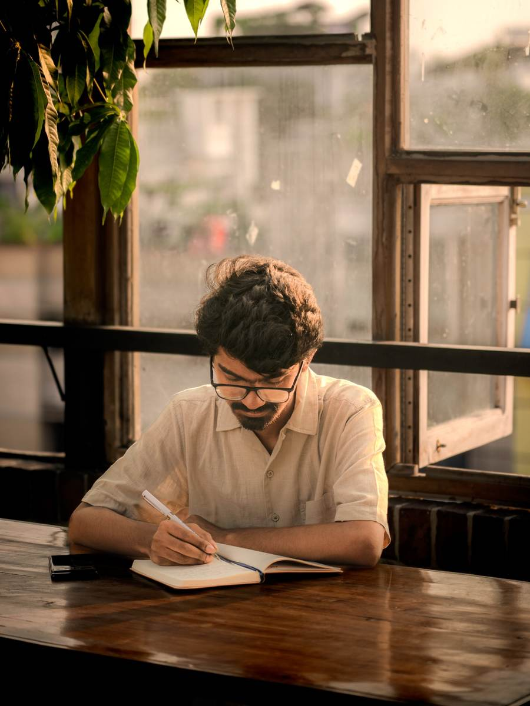
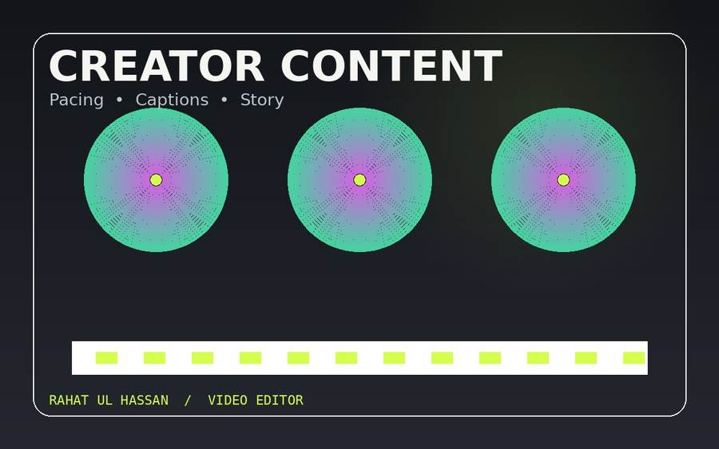
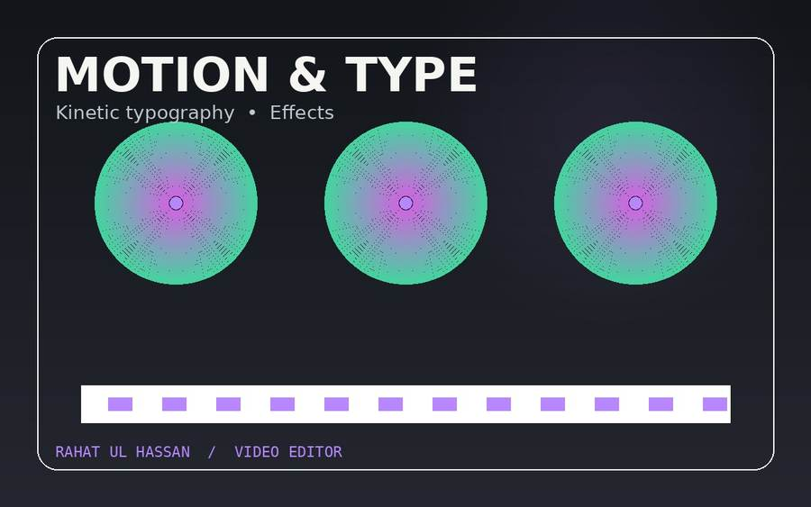
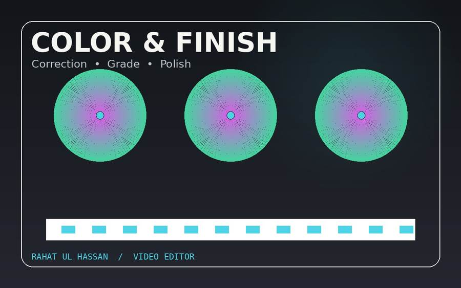

Video editor · Creative direction
I turn raw footage into stories.
I’m Md. Rahat Ul Hassan, a video editor focused on talking-head content, motion graphics, typography, color, and social-first storytelling.
20+videos edited
500K+views reached
100%focused on the story

AVAILABLE FOR SELECT WORK EDIT / STORY / MOTION Good editing isn't just cutting footage. It's deciding what the audience should feel next.
Creative work built for attention, clarity and consistency.
BASED IN BANGLADESH · WORKING REMOTELY
Selected capabilities
The craft behind
the cut.
From clean social edits to motion-heavy sequences, the goal is always the same: make the story easier to watch and remember.

Talking-head editing
Rhythm, captions, pacing and clean visual structure for creator-led content.
EDITING · CAPTIONS · STORY
Motion & typography
Motion graphics and kinetic type designed to make important moments land.
AFTER EFFECTS · TYPOGRAPHY
Color & finishing
Color correction and grading that keep footage cohesive and give it a deliberate feel.
DAVINCI · COLOR · FINISH